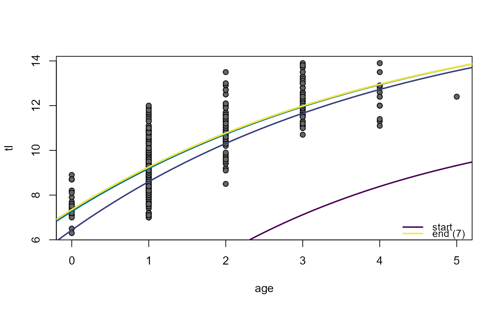
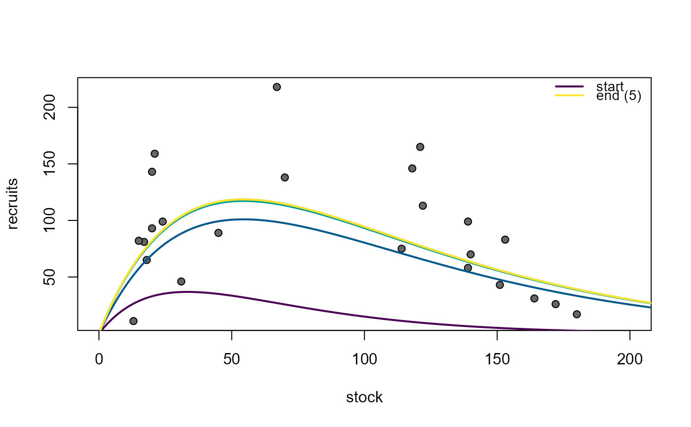

Adds model fits from iterations of the nls algorithm as returned when trace=TRUE. Useful for diagnosing model fitting problems or issues associated with starting values.
Usage
nlsTracePlot(
object,
fun,
from = NULL,
to = NULL,
n = 199,
lwd = 2,
col = NULL,
rev.col = FALSE,
legend = "topright",
cex.leg = 0.9,
box.lty.leg = 0,
add = TRUE
)Arguments
- object
An object saved from
nlsor fromcapture.outputusingtrywithnls. See details.- fun
A function that represents the model being fit in
nls. This must take the x-axis variable as the first argument and model parameters as a vector in the second argument. See details.- from, to
The range over which the function will be plotted. Defaults to range of the x-axis of the active plot.
- n
The number of value at which to evaluate the function for plotting (i.e., the number of values from
fromtoto). Larger values make smoother lines.- lwd
A numeric used to indicate the line width of the fitted line.
- col
A single character string that is a palette from
hcl.palsor a vector of character strings containing colors for the fitted lines at each trace.- rev.col
A logical that indicates that the order of colors for plotting the lines should be reversed.
- legend
Controls use and placement of the legend. See details.
- cex.leg
A single numeric value that represents the character expansion value for the legend. Ignored if
legend=FALSE.- box.lty.leg
A single numeric values that indicates the type of line to use for the box around the legend. The default is to not plot a box.
- add
A logical indicating whether the lines should be added to the existing plot (defaults to
=TRUE).
Value
A matrix with the residual sum-of-squares in the first column and parameter estimates in the remaining columns for each iteration (rows) of nls as provided when trace=TRUE.
Details
Nonlinear models fit with the nls function start with starting values for model parameters and iteratively search for other model parameters that continuously reduce the residual sum-of-squares (RSS) until some pre-determined criterion suggest that the RSS cannot be (substantially) further reduced. With good starting values and well-behaved data, the minimum RSS may be found in a few (<10) iterations. However, poor starting values or poorly behaved data may lead to a prolonged and possibly failed search. An understanding of the iterations in a prolonged or failed search may help identify the failure and lead to choices that may result in a successful search. The trace=TRUE argument of nls allows one to see the values at each iterative step. The function documented here plots the “trace” results at each iteration on a previously existing plot of the data. This creates a visual of the iterative process.
The object argument may be an object saved from a successful run of nls. See the examples with SpotVA1 and CodNorwegion.
However, if nls fails to converge to a solution then no useful object is returned. In this case, trace=TRUE must be added to the failed nls call. The call is then wrapped in try to work-around the failed convergence error. This is also wrapped in capture.output to capture the “trace” results. This is then saved to an object that which can then be the object of the function documented here. This process is illustrated with the example using BSkateGB.
The function in fun is used to make predictions given the model parameter values at each step of the iteration. This function must accept the explanatory/independent variable as its first argument and values for all model parameters in a vector as its second argument. These types of functions are returned by vbFuns, GompertzFuns, logisticFuns, and RichardsFuns for common growth models and srFuns for common stock-recruitment models. See the examples.
Note
The position of the “legend” can be controlled in three ways. First, if legend=TRUE, then the R console is suspended until the user places the legend on the plot by clicking on the point where the upper-left corner of the legend should appear. Second, legend= can be set to one of "bottomright", "bottom", "bottomleft", "left", "topleft", "top", "topright", "right" and "center". In this case, the legend will be placed inside the plot frame at the given location. Finally, legend= can be set to a vector of length two which identifies the plot coordinates for the upper-left corner of where the legend should be placed. A legend will not be drawn if legend=FALSE or legend=NULL.
Author
Derek H. Ogle, DerekOgle51@gmail.com
Examples
## Examples following a successful fit
vb1 <- vbFuns()
#> Warning: 'vbFuns()' is deprecated as of v0.10.0. Please use 'makeGrowthFun()' instead as it will be continuously updated in the future.
fit1 <- nls(tl~vb1(age,Linf,K,t0),data=SpotVA1,start=list(Linf=12,K=0.3,t0=0))
plot(tl~age,data=SpotVA1,pch=21,bg="gray40")
nlsTracePlot(fit1,vb1,legend="bottomright")

r1 <- srFuns("Ricker")
fitSR1 <- nls(log(recruits)~log(r1(stock,a,b)),data=CodNorwegian,start=list(a=3,b=0.03))
plot(recruits~stock,data=CodNorwegian,pch=21,bg="gray40",xlim=c(0,200))
nlsTracePlot(fitSR1,r1)

# no plot, but returns trace results as a matrix
( tmp <- nlsTracePlot(fitSR1,r1,add=FALSE) )
#> [,1] [,2]
#> [1,] 3.000000 0.03000000
#> [2,] 5.038795 0.01836117
#> [3,] 5.850261 0.01836117
#> [4,] 5.918852 0.01836117
#> [5,] 5.919256 0.01836117
if (FALSE) { # \dontrun{
if (require(FSAdata)) {
data(BSkateGB,package="FSAdata")
wtr <- droplevels(subset(BSkateGB,season=="winter"))
bh1 <- srFuns()
trc <- capture.output(try(
fitSR1 <- nls(recruits~bh1(spawners,a,b),wtr,
start=srStarts(recruits~spawners,data=wtr),trace=TRUE)
))
plot(recruits~spawners,data=wtr,pch=21,bg="gray40")
nlsTracePlot(trc,bh1)
# zoom in on y-axis
plot(recruits~spawners,data=wtr,pch=21,bg="gray40",ylim=c(0.02,0.05))
nlsTracePlot(trc,bh1,legend="top")
# return just the trace results
( tmp <- nlsTracePlot(trc,bh1,add=FALSE) )
}
} # }